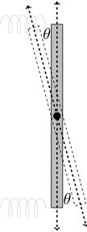
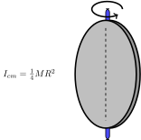


<div class = 'Ejercicio' >


<div class='enunciado'> A un disco de masa \(M\) y radio \(R\) se le saca un trozo concéntrico de radio \(r\). Este disco está unido a dos resortes de constante elástica \(k\) y gira respecto al eje que se indica en la siguiente figura de la izquierda, la figura de la derecha corresponde a otra vista del disco.


<div style='border:1px solid black;'>




</div>


<ol type='a'>
<li> Determine el momento de inercia \(I\) del disco respecto al eje de giro del disco en función de las variables indicadas en el problema. El momento de inercia para un disco de radio \(R\) y masa \(M\) está dado por:


<div style='border:1px solid black;'>

</div>


El momento de inercia del sistema, respecto al eje de giro mostrado en la figura, está dado por la diferencia entre el momento de inercia del disco completo de masa \(M\), menos el momento de inercia del disco concéntrico que es retirado, $$I=I_\text{CM}=\dfrac{1}{4}MR^2-\dfrac{1}{4}mr^2,$$
donde \(m\) corresponde a la masa de la sección retirada y se puede calcular, asumiendo la densidad superficial de masa del disco \(\sigma\) constante, de la siguiente manera,$$\sigma=\frac{M}{\pi R^2}=\frac{m}{\pi r^2}\qquad\Rightarrow\qquad m=M \dfrac{r^2}{R^2}.$$ Luego, $$I=\frac{1}{4}M\left(R^2-\frac{r^4}{R^2}\right)\qquad\Rightarrow\qquad I=\frac{1}{4}M \left(\frac{R^4-r^4}{R^2}\right).$$

</li><li> Determine la ecuación de movimiento del disco en función de la variable \(\theta\) que se indica en la figura para pequeñas oscilaciones.

Usamos la segunda ley de Newton en su forma rotacional \(\sum\vec\tau=I\vec\alpha\). Calculamos respecto al eje de giro mostrado en la figura para oscilaciones pequeñas, $$-k(R\theta)R-k(R\theta)R=I\ddot\theta.$$ Luego, $$\ddot\theta+\frac{2kR^2}{I}\theta=0\qquad\Rightarrow \qquad\ddot\theta+\frac{8k}{M}\left(\frac{R^4}{R^4-r^4}\right)\theta=0.$$

</li><li> Determine la frecuencia natural de oscilación \(\omega_0\). del disco en función de las variables del problema.

De la ecuación de movimiento, $$\omega_0=\sqrt{\frac{8k}{M}\left(\frac{R^4}{R^4-r^4}\right)}.$$

Se ubica un amortiguador a una distancia \(x\) desde el centro de giro como se muestra en la siguiente figura.


<div style='border:1px solid black;'>

</div>


</li><li> ¿Qué valor debe tener \(x\) para que sea un oscilador amortiguado crítico?

El amortiguador ejerce una fuerza de amortiguamiento del tipo \(bv\), donde \(v=x\dot\theta\). Aplicamos nuevamente la segunda ley de Newton, $$-k(R\theta)R-k(R\theta)R-b(x\dot\theta)x=I\ddot\theta.$$ Luego,
$$\ddot\theta+\frac{bx^2}{I}\dot\theta+\frac{2kR^2}{I}\theta=0.$$ Podemos asociar la constante de amortiguamiento a $$2\gamma=\frac{bx^2}{I},\qquad\text{as\'i}\qquad\gamma(x)=\frac{bx^2}{2I}.$$ La condición para que el movimiento sea críticamente amortiguado está dado por \(\sqrt{\omega_0^2-\gamma^2}=0\), entonces, \(\gamma(x)=\omega_0\). Despejando \(x\) tenemos,
$$x=\sqrt{\frac{2I\omega_0}{b}}\qquad\Rightarrow\qquad x=\sqrt{\frac{1}{b}} \ \sqrt[4]{2kM(R^4-r^4)}.$$

</li><li> Indique si puede ser \(x<r\), justifique su respuesta.

La única condición que debe satisfacer \(x\) es que debe ser menor a \(R\). Por otro lado, podemos colocar el amortiguador tal que \(x<r\), siempre que esté conectado a una altura por encima, o por debajo, donde exista disco.

</li></ol>
</div>


</div>